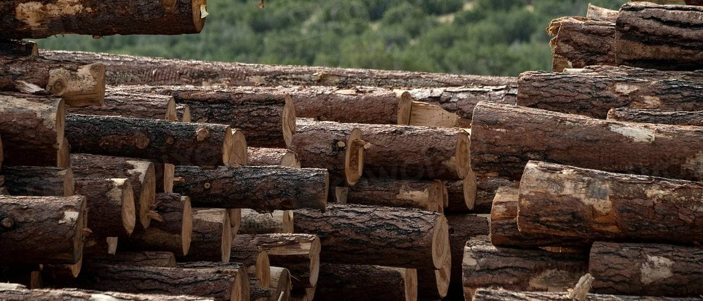
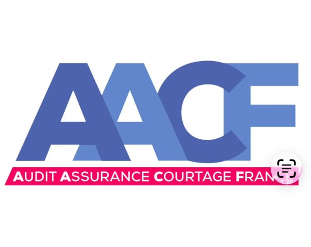
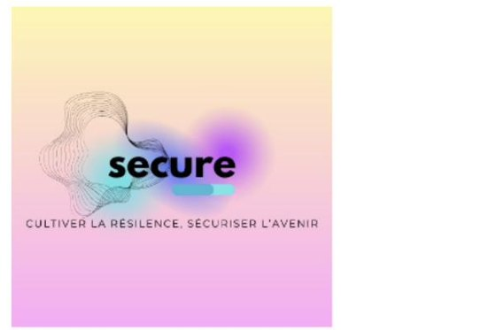
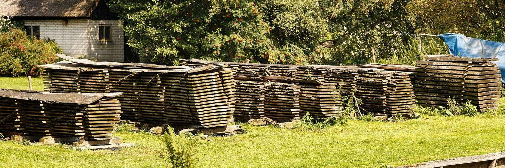

Le socle technique du programme est construit.
Cette plateforme réunit, dans un espace confidentiel unique, l’ensemble des travaux, des pièces et des échanges du programme d’assurance dédié à la filière bois : scieries, première et deuxième transformation, panneaux, emballage, traitement et recyclage. Elle répond point par point au cadrage formalisé le 12 mai 2026 et accompagne la consultation de marché conduite par GALACTIA.


La salle des documents complète (version 1) a été transmise ce jour à GALACTIA et à AACFRANCE, et la présente plateforme est ouverte : la vidéo de présentation de LENAXIS y est en ligne. La démonstration en direct sera programmée avec Romain Leclercq, directeur technique, sur un format de soixante-quinze minutes.
Les deux points restant à la main d’AACFRANCE — mandat de recherche et de placement, pièces administratives — sont traités en direct entre AACFRANCE et GALACTIA.
La filière bois subit un rétrécissement durable de l’offre d’assurance : sinistralité incendie structurellement élevée, exigences de prévention croissantes, retraits successifs d’acteurs généralistes. Le programme répond par une approche de souscription outillée : la prévention y est mesurée, tarifée et suivie dans le temps, ce qui rend le risque à nouveau présentable au marché.
Dommages aux biens
Incendie, explosion, foudre, événements naturels et assimilés, sur bâtiments, matériels et stocks — capitaux arbitrés à partir des valeurs déclarées et vérifiées en visite.
Pertes d’exploitation
Marge brute et frais supplémentaires d’exploitation, périodes d’indemnisation adaptées aux délais réels de reconstruction et de réapprovisionnement de la filière.
Bris de machines
Lignes de sciage, séchoirs, presses, affûtage, dommages électriques et biens confiés — le cœur productif des sites, souvent le plus long à remplacer.
Responsabilité civile et atteinte à l’environnement
Responsabilité d’exploitation et atteintes à l’environnement, en cohérence avec le statut d’installation classée pour la protection de l’environnement de la plupart des sites.

Quatre formules d’entrée dans le programme, calibrées par activité et par tranche de chiffre d’affaires. Leur composition détaillée est arbitrée avec AACFRANCE, garanties et franchises restant cohérentes d’une formule à l’autre.
Sérénité
Formule socleLe tronc commun des quatre garanties, pour les structures dont le profil de prévention est en cours de consolidation.
Performance
Formule intermédiaireCapitaux et périodes d’indemnisation renforcés pour les sites dont le score de prévention est établi.
Excellence
Formule supérieureÉtendues maximales du programme, réservées aux sites démontrant un haut niveau de maîtrise continue du risque.
Transition
Formule d’accompagnementUn parcours contractualisé de mise à niveau : plan de prévention daté, réévaluation programmée, trajectoire vers les formules supérieures.
Chaque affaire suit le même parcours industrialisé, porté de bout en bout par la plateforme LENAXIS.
Audit
Pré-cartographie du site avant le déplacement, puis visite physique de deux à quatre heures : douze modules d’inspection, photographies géolocalisées analysées par la plateforme, pièces administratives collectées.
Évaluation
Notation Uriel sur dix axes, taux technique et note de risque, identification des écarts à combler avant présentation au marché.
Production
Dossier de placement opposable, intercalaire courtier sur mesure, défense technique de la cotation auprès des souscripteurs.
Suivi
Pilotage des préconisations, relances automatiques, visite annuelle, notation actualisée — la fidélisation par la preuve.
Le tarificateur Uriel superpose une lecture qualitative propriétaire à la méthode actuarielle de référence du marché. Chaque taux produit peut être expliqué, justifié et défendu devant un souscripteur ou un réassureur.
Couche actuarielle — méthode TRE FFSA, fascicule 6
Langage commun du marchéTaux de base par rubrique professionnelle du bois, puis application des quatre familles de coefficients de la méthode : construction, environnement, protection, majorations et rabais. Cette assise officielle garantit que la cotation parle la langue de tous les souscripteurs.
Sur-couche qualitative Uriel — dix axes notés de 1 à 5
Modulation ± 15 % · score sur 100Les quatre premiers axes, déterminants dans la sinistralité de la filière, portent une pondération doublée. Le score global sur 100 module le taux technique et oriente la stratégie de présentation au marché.
Assise de sinistralité
≈ 63 000 événements croisésL’analyse s’appuie sur environ 63 000 événements industriels recensés dans la base publique ARIA du Bureau d’analyse des risques et pollutions industrielles, croisés avec les référentiels de prévention APSAD et la méthode D9 de dimensionnement des besoins en eau. Il en ressort une lecture fréquence-gravité par rubrique d’activité, dont découlent les scénarios de pertes maximales et les projections de rapport sinistres sur primes présentées en salle des documents.
Corpus fondateur — communication réservée
Le détail complet de la méthode — coefficients calibrés, clauses intercalaires, cas travaillés — est consigné dans huit livrables fondateurs représentant environ cent quatre-vingt-dix pages. Ce corpus constitue l’actif méthodologique du Cabinet SECURE ; il est communiqué dans le cadre du partenariat formalisé, au bénéfice exclusif du programme.
Quatorze années de développement, un code propriétaire entièrement réécrit, une direction technique assurée par Romain Leclercq. LENAXIS couvre les six phases de la gestion du risque, de l’identification jusqu’au retour d’expérience, en intégrant le financement du risque par l’assurance.
Deux capacités placent LENAXIS nettement au-dessus des pratiques courantes du marché : la connaissance du site avant la visite, et l’exploitation systématique de l’image comme donnée de risque.
Pré-cartographie du risque Avant la visite
Avant même le déplacement, la plateforme prépare le terrain : identification des surfaces bâties depuis les vues aériennes, recoupement avec les bases publiques — installations classées pour la protection de l’environnement, inventaires des sols pollués BASOL et BASIAS, données d’entreprise Pappers —, détection automatique des risques d’incendie et des voisinages sensibles, repérage des stockages extérieurs et des accès des secours. L’auditeur arrive sur site avec une carte du risque déjà esquissée.
Détection des risques sur image Pendant et après la visite
Les photographies géolocalisées prises en visite sont analysées automatiquement par la plateforme : repérage des points critiques — accumulations de poussières, stockages non conformes, encombrement des allées et des issues, installations électriques dégradées, départs de corrosion —, horodatage, rattachement au module d’audit concerné. Chaque constat visuel devient une donnée structurée, traçable et opposable, réutilisée dans la notation et dans le suivi des préconisations.
Audit digitalisé
Douze modules d’inspection sur tablette, notation en temps réel, génération automatique du rapport de visite avec photographies rattachées et plan d’actions hiérarchisé.
Tarification intégrée
Calcul pas à pas selon la méthode TRE FFSA, application de la sur-couche Uriel, simulation avant et après travaux de prévention, note de synthèse opposable exportée pour le dossier de placement.
Production du dossier
Dossier de soumission structuré, intercalaire courtier sur mesure, traçabilité complète des échanges — le temps de placement se réduit, la qualité du dossier devient un argument commercial.
Suivi et relances
Chaque écart relevé devient une action pilotée — un responsable, une échéance, une relance automatique à trois semaines — avec tableau de bord du portefeuille et notation annuelle actualisée.
Veille et alerte
Un événement critique — produit, fournisseur, site — est signalé en moins de deux minutes, pour agir avant que l’incident ne devienne un sinistre.
Données souveraines
Hébergement en Union européenne, conformité au règlement général sur la protection des données et au règlement eIDAS pour la signature, certification ISO 27001 visée en deuxième année d’exploitation.
Une séance de soixante-quinze minutes est proposée, animée par David Museur avec Romain Leclercq : parcours des modules à l’écran, cas réel de pré-cartographie, analyse d’images de visite, calcul tarifaire commenté, production du dossier de soumission.
Les pièces ci-dessous sont portées par la plateforme elle-même : un clic les ouvre ou les télécharge, depuis un ordinateur comme depuis un téléphone.
La data room complète (version 1) a été transmise ce jour aux destinataires. Elle reprend la numérotation du courriel de référence de David Cassagne (12 mai 2026, 17 h 34) ; le point 8 n’existait pas dans le courriel d’origine. L’index ci-dessous en donne la composition, axe par axe.
Pièces en communication réservée
Les huit livrables fondateurs du Cabinet SECURE (environ cent quatre-vingt-dix pages : coefficients calibrés, clauses intercalaires, cas travaillés) ne figurent pas sur la plateforme. Ils sont communiqués dans le cadre du partenariat formalisé.
Chronologie des travaux et des échanges entre AACFRANCE, le Cabinet SECURE et GALACTIA depuis l’ouverture du dossier.
Le programme repose sur une répartition nette des rôles. Chacun apporte une compétence distinctive ; aucun n’empiète sur le périmètre de l’autre.
AACFRANCE
Courtier mandataire : mandat et signature des conventions, structuration des garanties et des formules, relation avec les entreprises de la filière, distribution.
Cabinet SECURE
Ingénierie technique et actuarielle : méthode de tarification, audits de terrain, doctrine du programme, production des livrables techniques, conseil auprès des deux autres structures.
GALACTIA
Placement marché et réassurance, à titre exclusif : consultation des porteurs, négociation des capacités et des traités, conduite des présentations aux réassureurs.
Plateforme propriétaire opérée par le Cabinet SECURE, direction technique Romain Leclercq. Elle porte la chaîne opérationnelle du programme et héberge le présent espace d’échange.
Périmètre exclusif de placement
Porteurs, capacités, vagues de consultation et structures de réassurance relèvent exclusivement de GALACTIA. Aucun document du Cabinet SECURE n’aborde ce champ.
Confidentialité
L’ensemble des pièces de la plateforme est confidentiel, réservé aux trois structures. Toute diffusion externe suppose l’accord écrit préalable des parties concernées.
Validation avant transmission
Aucune pièce n’est transmise à un tiers — porteur, réassureur, prospect — sans validation écrite de la structure émettrice et de la structure pilote du périmètre.
Langage des livrables
Français clair, termes écrits en toutes lettres ; seuls les référentiels techniques établis (APSAD, méthode D9, TRE FFSA, NIMP15, GreCon) et les noms institutionnels (INSEE, FNB, FCBA, ARIA/BARPI) figurent en sigle.
Accès et diffusion de la plateforme
L’adresse de la plateforme est transmise en direct aux seuls destinataires autorisés ; la plateforme n’est ni référencée par les moteurs de recherche, ni publiée ailleurs.
Mise à jour des pièces
Les ajouts et mises à jour transitent par le Cabinet SECURE, qui tient le versionnage et l’index de la salle des documents.